Định dạng văn bản nhằm mục đích để thu hút sự chú ý
của người đọc vào 1 phần cụ thể nào
đó của tài liệu và nhấn mạnh các thông tin quan trọng trong đó. Trong Word, người dùng có nhiều lựa chọn để chỉnh sửa
văn bản, bao gồm font chữ và màu sắc font chữ.
Ngoài ra, người dùng cũng có thể điều chỉnh căn lề văn bản để hiển thị thay đổi
theo ý muốn trên tài liệu.
3.1 Định dạng ký tự bằng nhóm lệnh Font
Lựa chọn văn bản mà cần định dạng và các thao tác định dạng ở mục này sẽ làm việc trên thẻ
Home -> group Font
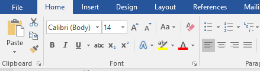
Hình 4.25. Màn hình thẻ Home
Định dạng Font chữ mặc định trong Word khi mở một
trang soạn thảo mới là Font Calibri, nhưng người dùng cũng có thể thay đổi bất cứ
khi nào theo ý mình.
Để thay đổi định dạng font mặc định à người dùng mở một trang Word trống à chọn Font và một số
định dạng người dùng cần à Tab Home à Group Font à Mở cửa sổ Font (Hoặc bấm tổ hợp phím Ctrl + D
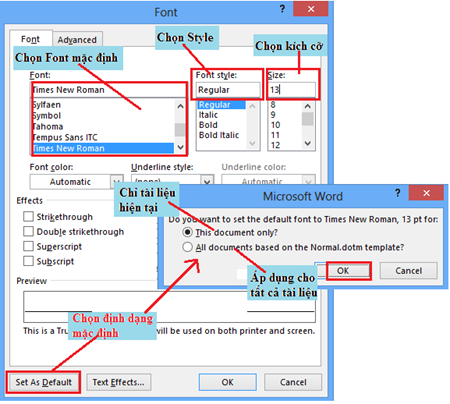
Hình 4.26. Hộp thoại Font
- Để thay đổi Font chữ à Chọn khối văn bản cần định dạng
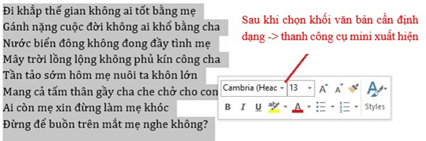
Hoặc định dạng trên nhóm công cụ Font của Tab Home:
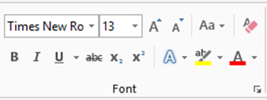
- Định dạng Font : Click 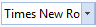
- Chọn kích thước chữ : 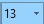
- Tăng kích thước :
- Giảm kích thước:
- Change Case: Aa -> chuyển đổi từ chữ hoa -> chữ thường, ngược lại, …
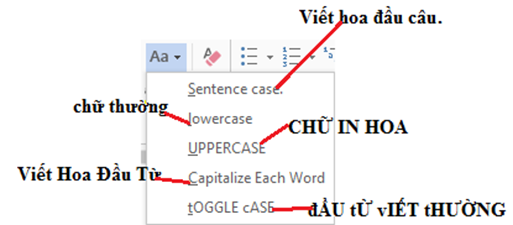
- Chữ
in đậm: 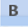.png) -> chọn khối văn bản -> (Ctrl+B) / click biểu tượng
-> chọn khối văn bản -> (Ctrl+B) / click biểu tượng
-
Chữ in nghiêng:
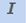
click biểu tượng .png)
- Chữ gạch dưới: -> chọn khối văn bản -> (Ctrl+U) / click biểu tượng
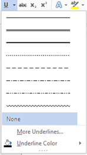
- Gạch giữa từ:
- Chỉ số trên: -> ax2+bx=c
- Chỉ số dưới: 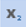
- Hiệu ứng font:
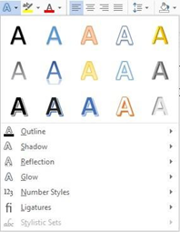
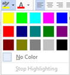
- Tô màu chữ: 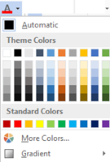
Lưu ý: Màu sắc trong menu drop-down sẽ bị giới hạn. Chọn More Color
nằm dưới menu để truy cập hộp thoại Colors.
Chọn một màu mà người dùng muốn, sau đó click
chọn OK.
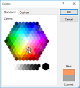
- Xóa định dạng: -> Xóa định dạng
Ngoài ra, người dùng có thể thay đổi khoảng cách giữa các từ, vị trí từ trong hàng, … -> mở cửa sổ font -> chọn Tab Advance
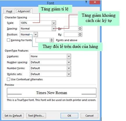
Hình 4.27. Hộp thoại Font Advance
3.2 Định dạng Paragraph
Định dạng paragraphs cho phép người dùng thay đổi cách nhìn trên toàn bộ tài liệu.
Người dùng có thể truy cập vào các công cụ của định dạng Paragraphs bằng
cách chọn Tab Home, chọn nhóm Paragraph
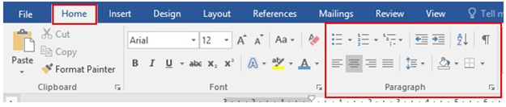
Hình 4.28. Nhóm lệnh Paragraph
Canh lề trong Paragraph: Canh lề cho phép người dùng thiết lập cách văn bản xuất hiện. Để thay đổi lề ta thực hiện như sau:
- Chọn đoạn văn bản, rồi nhấp vào tab Home, rồi chọn nút thích hợp cho việc canh lề trên nhóm Paragraph:
- Align Left (Ctrl+L): văn bản được canh lề sang mép bên trái.
- Center (Ctrl+E): Văn bản được căn giữa các lề.
- Align Right (Ctrl+R): Văn bản được canh lề sang mép bên phải.
- Justify (Ctrl+J): Văn bản được dàn đều cả hai bên trái và phải.
Thụt lề đoạn: Thụt lề đoạn cho phép người dùng xác định văn bản trong một đoạn canh lề khác nhau. Có một số tùy chọn cho việc thụt lề:
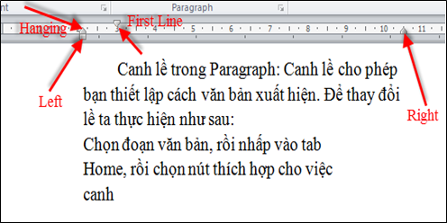
- First Line: Điều khiển đường biên bên trái cho dòng đầu tiên của đoạn.
- Hanging: Điều khiển đường biên trên trái với tất cả các dòng trong một đoạn ngoại trừ dòng đầu tiên.
- Left: Điều khiển đường biên bên trái với mọi dòng trong một đoạn.
- Right: Điều khiển đường biên bên phải với mọi dòng trong một đoạn.
Tạo khoảng cách giữa các dòng: Trong văn bản, kỹ thuật dàn trang giúp trình bày văn bản rõ ràng và đẹp mắt. Nếu như trước đây người dùng thường tạo khoảng cách bằng phím Enter để xuống dòng thì giờ đây người dùng sẽ sử dụng các công cụ có sẵn trong chương trình soạn thảo MS Word để làm việc này.
- Chọn các dòng cần định dạng khoảng cách cho chúng. Chọn chức năng Line and Paragraph Spacing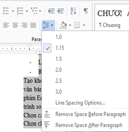
- Thay đổi các thông số trong phần Spacing để tạo khoảng cách giữa các dòng. Có thể mở hộp thoại Paragraph để chỉnh các thông số trong định dạng đoạn
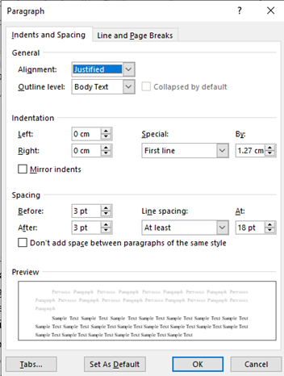
3.3 Tạo khung và nền
Người dùng có thể thêm đường viền, tạo khung và nền cho các đoạn văn bản và toàn trang. Để tạo một đường viền bao quanh một đoạn hoặc các đoạn, ta thực hiện như sau:
Lựa chọn vùng văn bản nơi người dùng muốn có đường viền hay hiệu ứng tô bóng.
Nhấp nút Borders trên nhóm Paragraph, chọn Border and Shading. Hoặc mở hộp thoại Border and Shading để chỉnh
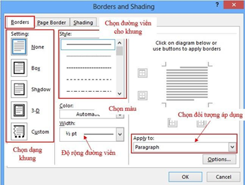 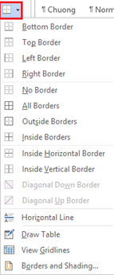
Hình 4.30. Hộp thoại Border and Shading tạo đường viền
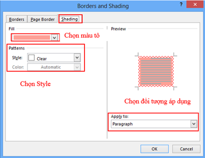
Hình 4.31. Hộp thoại Borders and Shading tạo màu nền
3.4 Định khoảng cách Tab Stop
Để đặt điểm dừng Tab cho một văn bản, người dùng có thể đặt Tab trực tiếp trên Tab Selector, hoặc mở cửa sổ Tab để thiết kế.
- Đặt trực tiếp trên thước
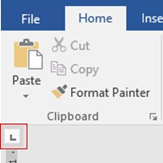
Các loại Tab:
- Left tab -> Đặt vị trí bắt đầu của đoạn text mà từ đó sẽ chạy sang phải khi người dùng nhập liệu.
- Right tab -> Nằm ở người dùng phải cuối đoạn text. Khi người dùng nhập liệu, đoạn text sẽ di chuyển sang trái kể từ vị trí đặt tab.
- Center tab -> Đặt vị trí chính giữa đoạn text. Đoạn text sẽ nằm giữa vị trí đặt tab khi người dùng nhập liệu.
- Decimal tab -> Khi đặt tab này, những dấu chấm phân cách phần thập phân sẽ nằm trên cùng một vị trí.
- Bar tab -> Loại tab này không định vị trí cho text. Nó sẽ chèn một thanh thẳng đứng tới vị trí đặt tab.
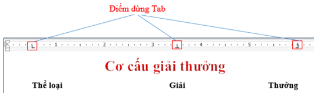
Để đặt Tab -> chọn Tab từ Tab Selector -> L-Click trên thanh thước ngang tại vị trí muốn đặt tab.
- Đặt một tab bất kỳ trên thước ngang -> double click trên biểu tượng tab đó:
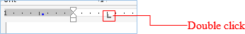
=> Đặt qua cửa sổ Tab
Để mở cửa sổ thiết lập Tab, ta chọn: Tab Home à group Paragraph à Paragraph setting
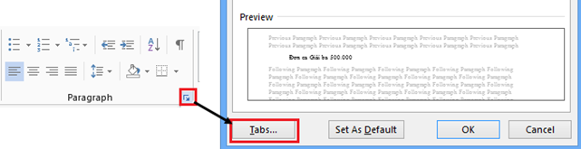
- Cửa sổ thiết lập Tab:
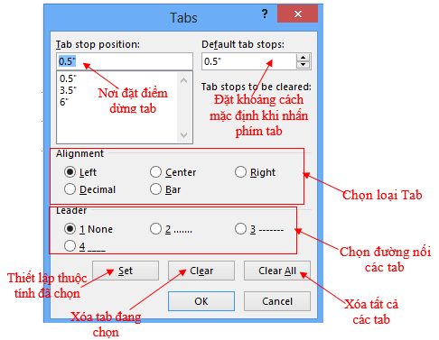
Sau khi đã thiết lập tất cả các thuộc tính cho các Tab, để thực hiện Tab cho mỗi vị trí, người dùng chỉ cần nhấn phím Tab trên bàn phím.
3.5 Định số cột cho văn bản
Có những văn bản sau khi soạn thảo muốn chia ra làm nhiều cột như các bài báo, tạp chí - thì dạng cột còn được sử dụng rất thường xuyên. Để thực hiện thao tác này, người dùng thực hiện theo các thao tác sau:
- Bôi đen đoạn văn bản muốn định dạng.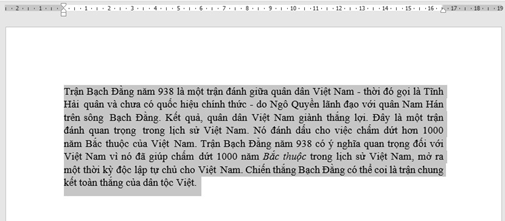
- Chọn thẻ Layout, click Columns và một danh sách sẽ hiện ra.
- Chọn số cột mà người dùng
muốn tạo.
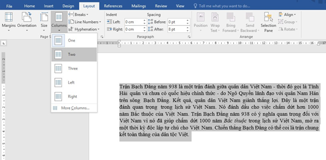
Hình 4.32. Chia cột đoạn văn bản
- Văn bản sẽ được định dạng dưới dạng cột.
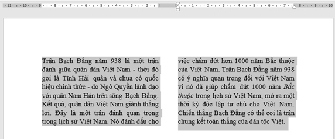
Để mở cửa sổ Column -> More Columns:
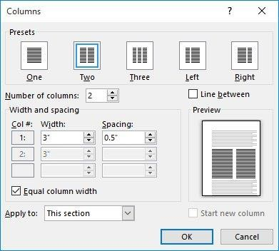
Hình 4.33. Hộp thoại Column
- Presets: chọn một trong các mẫu có sẵn hoặc nhập số cột vào ô Number of columns.
- Line between: Kẻ/Không kẻ đường phân cách giữa các cột.
- Width and spacing: Độ rộng của cột và khoảng cách giữa các cột.
- Apply to: Phạm vi chia cột.
Lưu ý: Khi chia cột người dùng thường mắc các lỗi như chia hai cột dữ liệu nằm trọn một cột, không không chia qua cột thứ hai… Các lỗi này xảy ra ở khâu quét chọn dữ liệu (thường là không ngắt đoạn). Để chia cột luôn thành công người dùng nên bật nút Show/Hide để khi quét chọn dữ liệu không quét phải dấu Enter cuối cùng
- Xóa cột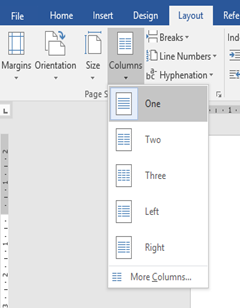
Để bỏ định dạng cột vừa tạo, đặt trỏ chuột tại bất kì vị trí nào trong bảng, sau đó chọn Columns trên tab Layout và chọn One.
3.6 Đánh số tự động
- Bullets and Numbering
Trong trình bày văn bản, có một đoạn tài liệu liệt kê dạng danh sách, để tài liệu được định dạng một cách nhanh chóng và đẹp mắt, chúng ta sẽ sử dụng công cụ định dạng Bullet and Numbering.
- Chọn đoạn tài liệu cần định dạng.
- Chọn Tab Home à group Paragraph à Bullets/Numbering
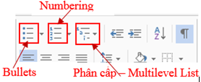
Các dạng Bullets (ký tự):
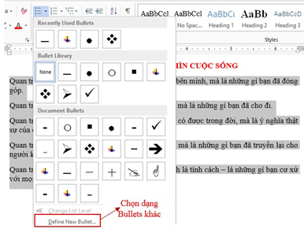
Hình 4.34. Định dạng Bullets
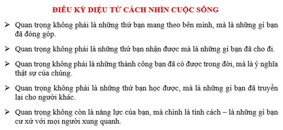
- Các dạng Numbering (số):
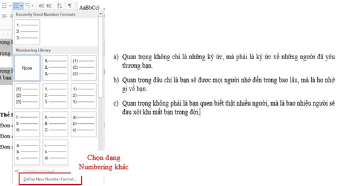
Hình 4.35. Định dạng Numbering
- Dạng phân cấp - Multilevel List
Có những đoạn tài liệu có nhiều phân cấp, người dùng không cần phải chọn từng dạng Numbering và Bullets, Word 2019 sẽ giúp người dùng định dạng nhanh chóng chỉ cần một lần cho tất cả các cấp.
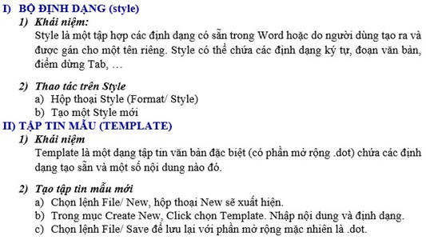
Hình 4.36. Mẫu định dạng tài liệu theo phân cấp
Chọn đoạn tài liệu muốn định dạng.
- Vào Tab Home -> group Paragraph -> Multilevel List -> Define New Multilevel List
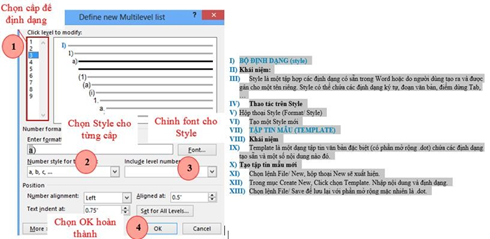
Hình 4.37. Định dạng Multilevel List
Sau khi Click OK để hoàn thành thì đoạn văn bản sẽ chạy Cấp đầu tiên, để cho các cấp còn lại theo ý mình, người dùng chỉ cần chọn các đối tượng cùng cấp à nhấn phím Tab trên bàn phím. Để lùi ra một Tab thì người dùng sử dụng tổ hợp phím Shift + Tab.
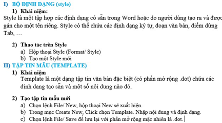
3.7 Tạo chữ cái lớn đầu dòng
Đây là dạng trình bày văn bản ở vị trí đầu một đoạn, ký tự đầu tiên của đoạn văn bản sẽ có kích thước lớn và có độ cao bằng nhiều dòng văn bản.ầu tiên, bôi đen chữ cái đầu dòng, vào menu Insert chọn công cụ Drop Cap chọn kiểu chữ cái lớn đầu dòng cần sử dụng.
Hoặc chọn Drop Cap Option để lựa chọn các thông số khác. Tại đây, cần chú ý các thông số sau:
- Lines to drop: Chọn số dòng sẽ hiển thị chữ cái lớn đầu dòng.
- Distance from text: Khoảng cách giữa chữ cái lớn đầu dòng và đoạn văn bản.
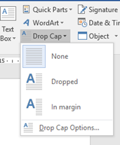
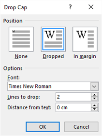
Hình 4.38. Hộp thoại Drop Cap Options- Thao tác bỏ chữ hoa:
+ Bước 1: Kích chuột chọn ký tự cần bỏ
+ Bước 2: Kích chuột chọn Drop Cap chọn None.